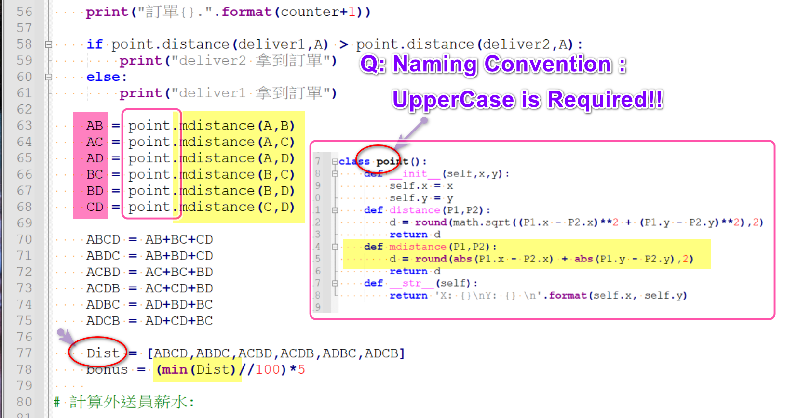
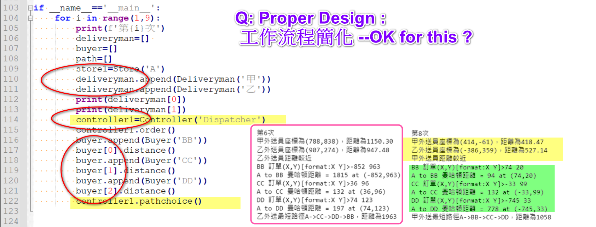
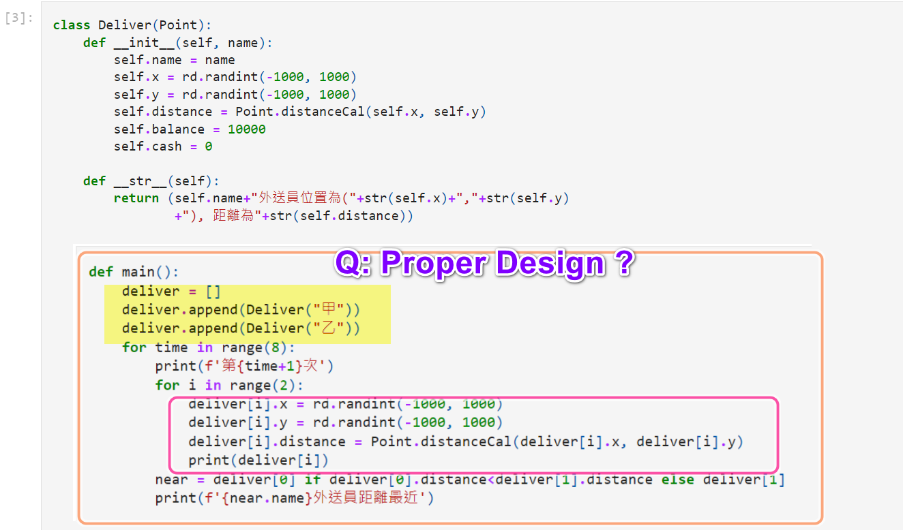

Python期末專題報告
By 張皓鈞 B11030202
2022/01/04
FIG1 Q1
嘗試修改基於Turtle的臉部繪圖程式
使其可以繪製熊貓的臉部圖案
解題思路
因範例提供的Face Class已經有定義好的臉部繪製方法，故我選擇邊寫新的Panda Class來繼承Face Class，並透過複載(override)將繪製的方法進行修改，使其可以繪製熊貓臉部圖案
程式
main.py
xxxxxxxxxxfrom turtle import *from Panda import Panda
# sets the animation speed: can be 'slow'speed('slow')
# uncomment for instanteneous drawing - no animation# tracer(0)
p = Panda(0, 0)p.setSize(110)p.draw()
# Uncomments to show drawing if no animation# update()
hideturtle()done()Panda.py
x
from turtle import *from Face import Face
class Panda(Face):
def __init__(self, xpos, ypos): super().__init__(xpos, ypos)
def draw(self): self.goHome() pensize(4) self.drawEars() self.drawOutline() self.drawEyes() self.drawNose() self.drawMouth()
def drawEars(self): radius = self._size * 0.3636
# Draw first ear left(45) forward(self._size - radius * 0.5) right(90) pendown() Face.ring('black', radius) penup() self.goHome() # Draw second ear left(45 + 90) forward(self._size - radius * 0.5) right(90) pendown() Face.ring('black', radius) penup() self.goHome()
def drawOutline(self): forward(self._size) left(90) pendown() Face.ring('white', self._size) penup() self.goHome()
def drawEyes(self): ##### Draw eyes black ##### # Draw first eye penup() left(45) forward(self._size * 0.3) right(90) pendown() Face.ring('black', self._size * 0.1818) self.goHome() # Draw second eye penup() left(45 + 90) forward(self._size * 0.3) right(90) pendown() Face.ring('black', self._size * 0.1818) self.goHome() ##### Draw eyes white ##### # Draw first eye penup() left(45) forward(self._size * 0.32) right(90) pendown() Face.ring('white', self._size * 0.0909) self.goHome() # Draw second eye penup() left(45 + 90) forward(self._size * 0.32) right(90) pendown() Face.ring('white', self._size * 0.0909) self.goHome()
def drawNose(self): penup() right(90) forward(self._size * 0.2) right(90) pendown() Face.ring('black', self._size * 0.1272) self.goHome()
def drawMouth(self): penup() right(90) forward(self._size * 0.2 + (self._size * 0.1272) * 2) pendown() circle(self._size * 0.1818, 180) penup() self.goHome() right(90) forward(self._size * 0.2 + (self._size * 0.1272) * 2) pendown() left(180) circle(self._size * 0.1818, -180) self.goHome()Face.py
xxxxxxxxxxfrom turtle import *
# A function is defined for each part, with following steps# 1. pen up# 2. move to correct position# 3. pen down# 4. draw# 5. return home
class Face:
def __init__(self, xpos, ypos): self._size = 50 self._coord = (xpos, ypos) self._noseSize = 'normal'
def setSize(self, radius): self._size = radius def draw(self): self.goHome() pensize(2) self.drawOutline() self.drawEye(135) self.drawEye(45) self.drawMouth() self.drawNose() pensize(5) self.drawHairStrand(-15, -17) self.drawHairStrand(0, -17) self.drawHairStrand(15, -17) self.drawHairStrand(165, 17) self.drawHairStrand(180, 17) self.drawHairStrand(195, 17)
# --------------------------------------------------# Functions that are called from with the class# --------------------------------------------------
# After drawing each part, turtle position # returns to centre. Parts can be drawn in any order def goHome(self): penup() goto(self._coord) setheading(0) def drawOutline(self): penup() forward(self._size) left(90) pendown() circle(self._size) self.goHome()
def drawEye(self, turn): penup() left(turn) forward(self._size / 2) pendown() dot(self._size/10) self.goHome() def drawMouth(self): penup() right(135) forward(self._size/1.7) left(90) pendown() circle(self._size/1.7, 90) self.goHome()
def drawNose(self): if self._noseSize == 'large' : dot(self._size/2, "grey") elif self._noseSize == 'small' : dot(self._size/6, "grey") else : dot(self._size/4, "grey") self.goHome()
def drawHairStrand(self, headAngle, headAngleIncrement): penup() setheading(90) forward(self._size) pendown() segmentLength = int(self._size/6) for i in range(5): setheading(headAngle) headAngle += headAngleIncrement forward(segmentLength) self.goHome()
def ring(col: str, rad: int): """ Draw a colored circle with a dynamic radius
Args: col (str): Color rad (int): Radius """ # Set the fill fillcolor(col) # Start filling the color begin_fill()
# Draw a circle circle(rad) # Ending the filling of the color end_fill()效果展示

FIG1 Q2
編寫一個計算捷運車站從起始車站到多個目標車站最佳路徑的GUI程式
解題思路
利用物件導向設計原則，編寫/設計MRT.Station、MRT.Path、MRT.GUI Classes，將系統拆分為車站、路徑、介面的不同類，其中的最佳路徑計算採用Dijkstra演算法
架構設計

程式
main.py
xxxxxxxxxximport mathimport randomimport MRT
# 定義車站資訊stations_info = { "南港展覽館": { "pos": (732, 440), "nearby": [ "內湖", "動物園" ] }, "內湖": { "pos": (679, 266), "nearby": [ "南港展覽館", "動物園", "台北車站", "大橋頭" ] }, "動物園": { "pos": (604, 730), "nearby": [ "南港展覽館", "內湖", "六張犁" ] }, "六張犁": { "pos": (449, 575), "nearby": [ "新店", "永安市場", "台北車站" ] }, "台北車站": { "pos": (266, 440), "nearby": [ "內湖", "大橋頭", "亞東醫院", "永安市場", "六張犁" ] }, "大橋頭": { "pos": (235, 325), "nearby": [ "內湖", "蘆洲", "永安市場", "台北車站" ] }, "永安市場": { "pos": (270, 624), "nearby": [ "六張犁", "台北車站", "大橋頭", "蘆洲", "亞東醫院", "新店" ] }, "蘆洲": { "pos": (87, 189), "nearby": [ "大橋頭", "永安市場" ] }, "亞東醫院": { "pos": (114, 614), "nearby": [ "台北車站", "永安市場" ] }, "新店": { "pos": (376, 766), "nearby": [ "六張犁", "永安市場" ] }}
def getRandomStations(stations: list[MRT.Station], number = 3) -> list[MRT.Station]: """ 隨機獲取多個目標車站(不重複)
Args: stations (list[MRT.Station]): 車站列表 number (int, optional): 數量 Defaults to 3.
Returns: list[MRT.Station]: 隨機選出的車站 """ shuffle_stations = stations.copy() random.shuffle(shuffle_stations) return shuffle_stations[0:number]
if __name__ == "__main__":
# 創建車站物件 stations = [MRT.Station(name, info['pos'], info['nearby']) for name, info in stations_info.items()]
# 宣告MRT相關物件 gui = MRT.GUI() path = MRT.Path(stations)
# 設置起點站 start_station = stations[0]
# 刪除起點站，以避免被抽中作為目標站 stations_without_start = stations.copy() del stations_without_start[stations_without_start.index(start_station)] # 隨機抽出目標站 target_stations = getRandomStations(stations_without_start)
# 印出起點站和目標站相關資訊 print("起始站：{}".format(start_station.name)) print("目標站：") for station in target_stations: print("\t{}".format(station.name))
# 繪製所有車站的可能路徑 gui.drawStationsWay(stations)
# 計算所有目標車站的最佳路徑並繪製 print("\n最佳路徑：") begin_station = start_station target_stations_copy = target_stations.copy() for i in range(len(target_stations_copy)): # 從剩餘目標車站中挑出最近的一個先走 min_dis = math.inf min_station = begin_station min_shortest_path = None for station in target_stations_copy: dis = 0 # print("begin: {}, target: {}".format(begin_station.name, station.name)) shortest_path = path.findShortestPath(begin_station, station) for p in shortest_path: dis += p['distance'] if dis < min_dis: min_dis = dis min_station = station min_shortest_path = shortest_path # 從列表中刪除已到達的車站 del target_stations_copy[target_stations_copy.index(min_station)] print("\t{}. {} => {}".format(i + 1, begin_station, min_station)) for j in range(len(min_shortest_path) - 1): print("\t →Step{}: {} -> {}".format(j + 1, min_shortest_path[j]['name'], min_shortest_path[j + 1]['name'])) # 繪製從起點到終點的路徑 gui.drawStationsPath(path, min_shortest_path) begin_station = min_station
# 繪製所有車站的標記點 gui.drawStationsPoint(stations)
# 在圖上印出路徑相關資訊 target_stations_text = "" i = 0 for station in target_stations: target_stations_text += station.name + (", " if i != len(target_stations) - 1 else "") i += 1 gui.drawInfoText("起點站：{} 目標站：{}".format(start_station.name, target_stations_text))
# 等待視窗關閉 gui.waitClose()Station Class
xxxxxxxxxxclass Station: """ 車站 """
def __init__(self, name: str, pos: tuple, nearby = []): """ 車站
Args: name (str): 站名 pos (tuple): 座標 nearby (list[str], optional): 鄰近車站名稱 """ self._name = name self._pos = pos self._nearby = nearby
def __str__(self): return "{}({}, {})".format(self._name, self._pos[0], self._pos[1])
def name(self) -> str: """ 車站名稱
Returns: str: 車站名稱 """ return self._name
def pos(self) -> tuple: """ 車站座標
Returns: tuple: 車站座標 格式：(x, y) """ return self._pos
def nearby(self) -> list[str]: """ 相鄰車站名稱
Returns: list[str]: 相鄰車站名稱 """ return self._nearbyPath Class
xxxxxxxxxxclass Path: """ 路徑 """
def __init__(self, stations: list[Station]): """ 路徑
Args: stations (list[Station]): 車站列表 """ self._stations = stations
def _minDistance(distances: dict) -> tuple: """ 找出列表中尚未marked的最近車站
Args: distances (dict): 路徑列表
Returns: tuple: (最近車站鍵名, 最近車站距離) """ minIndex = list(distances.keys())[0] minVal = math.inf for name, data in distances.items(): if data['distance'] < minVal and data['marked'] == False: minIndex = name minVal = data['distance'] return (minIndex, minVal)
def findShortestPath(self, start_station: Station, end_station: Station) -> list: """ 尋找從A車站到B車站的最短路徑 基於Dijkstra演算法
Args: start_station (Station): 起點車站 end_station (Station): 終點車站
Returns: list: 路徑列表 """ distances = dict() for station in self._stations: distances[station.name] = {"distance": math.inf, "single_distance": math.inf, "marked": False, "from": None} distances[start_station.name]['marked'] = True distances[start_station.name]['distance'] = 0 distances[start_station.name]['single_distance'] = 0 station = start_station for _ in self._stations: for near_station in self.getNearStations(station): dis = Path.getStationsDistance(station, near_station) full_dis = dis + distances[station.name]['distance'] # print("begin: {}, end: {}, {}, {}".format(station.name, near_station.name, dis, distances[near_station.name]['distance'])) if full_dis < distances[near_station.name]['distance'] and distances[near_station.name]['marked'] == False: distances[near_station.name]['single_distance'] = dis distances[near_station.name]['distance'] = full_dis distances[near_station.name]['from'] = station.name minIndex, minVal = Path._minDistance(distances) distances[minIndex]['marked'] = True # print("{} to {}, dis=".format(station.name, minIndex)) # print(distances) station = self.getStationByName(minIndex) # print(distances) path = [] last_station = end_station.name path.insert(0, {"name": last_station, "distance": distances[last_station]['single_distance']}) while True: path.insert(0, {"name": distances[last_station]['from'], "distance": distances[last_station]['single_distance']}) last_station = distances[last_station]['from'] if last_station == start_station.name: break return path
def getStationByName(self, name: str) -> Station: """ 透過站名獲取車站
Args: name (str): 站名
Returns: Station: 車站 """ return [station for station in self._stations if station.name == name][0]
def getNearStations(self, station: Station) -> list[Station]: """ 獲取鄰近車站
Args: station (Station): 車站
Returns: list[Station]: 鄰近車站 """ near_stations = list() for near_station_name in station.nearby: near_station = self.getStationByName(near_station_name) if near_station: near_stations.append(near_station) return near_stations
def getStationsDistance(start_station: Station, end_station: Station) -> int: """ 獲取兩車站間的距離
Args: start_station (Station): 車站1 end_station (Station): 車站2
Returns: int: 距離 """ distance = math.sqrt( ( abs(start_station.pos[0] - end_station.pos[0]) ** 2 ) + ( abs(start_station.pos[1] - end_station.pos[1]) ** 2 ) ) return distanceGUI Class
xxxxxxxxxxclass GUI: """ GUI """
def __init__(self): """ GUI """
# 初始化pygame pygame.init()
# 設置主屏窗口 self._screen = pygame.display.set_mode((800, 800))
# 設置窗口標題 pygame.display.set_caption('捷運最短路徑推算')
# 引入字體類型 self._f = pygame.font.Font('./fonts/NotoSansTC-Regular.otf', 24)
# 加載背景圖 bg_surface = pygame.image.load("./images/background.png").convert() # 繪製背景圖 self._screen.blit(bg_surface, (0, 0))
def drawStationsPoint(self, stations: list[Station]): """ 繪製所有車站的標記點
Args: stations (list[Station]): 車站列表 """ for station in stations: pygame.draw.circle(self._screen, (255, 0, 0), station.pos, 10)
def drawStationsWay(self, stations: list[Station]): """ 繪製所有車站的可能路徑
Args: stations (list[Station]): 車站列表 """ for station in stations: for near_station_name in station.nearby: near_station = [station for station in stations if station.name == near_station_name][0] if near_station: pygame.draw.line(self._screen, (127, 0, 0), station.pos, near_station.pos, width=1)
def drawStationsPath(self, mrt_path: Path, path: list): """ 繪製一條車站到車站間的路徑
Args: mrt_path (Path): Path Object path (list): 路徑列表 """ for i in range(len(path) - 1): pygame.draw.line(self._screen, (0, 0, 255), mrt_path.getStationByName(path[i]['name']).pos, mrt_path.getStationByName(path[i+1]['name']).pos, width=4)
def drawInfoText(self, text: str, color = (0, 0, 255), bg_color = (255, 255, 255)): """ 繪製資訊文字
Args: text (str): 文字內容 color (tuple, optional): 顏色 Defaults to (0, 0, 255). bg_color (tuple, optional): 背景顏色 Defaults to (255, 255, 255). """ # 生成文本信息，第一個參數文本內容；第二個參數，字體是否平滑； # 第三個參數，RGB模式的字體顏色；第四個參數，RGB模式字體背景顏色； t = self._f.render(text, True, color, bg_color) #獲得顯示對象的rect區域坐標 textRect = t.get_rect() # 設置顯示對象居中 textRect.topleft = (20, 20) # 將準備好的文本信息，繪制到主屏幕 Screen 上。 self._screen.blit(t, textRect)
def waitClose(self): """ 等待視窗關閉 """ # 固定代碼段，實現點擊"X"號退出界面的功能，幾乎所有的pygame都會使用該段代碼 while True: # 循環獲取事件，監聽事件狀態 for event in pygame.event.get(): # 判斷用戶是否點了"X"關閉按鈕,並執行if代碼段 if event.type == pygame.QUIT: #卸載所有模塊 pygame.quit() #終止程序，確保退出程序 sys.exit() pygame.display.flip() #更新屏幕內容效果展示
測試1


測試2


測試3


FIG2
Question 1

選擇這張圖是因為該程式的命名規則與我自己(多數人)的習慣有很大的衝突，使我看了非常不舒服，一般來說，class命名應該以大寫開頭，函數及變數應以小寫開頭命名，私有函數及變數以底線開頭，任何情況下都不應以數字作為函數或變數的開頭。
Question 2

宣告Object的部分應使用迴圈進行，否則程式將不具備彈性，無法輕易修改外送員及買家的資訊。
Modified Code
xxxxxxxxxx# 宣告外送員deliverymans_name = ["甲", "乙"]deliverymans = [Deliveryman(name) for name in deliverymans_name]
# 宣告買家buyers_man = ["BB", "CC", "DD"]buyers = [Buyer(name) for name in buyers_man]Question 3

看圖中的設計，外送員的位置座標似乎是運行的必備資訊，所以我認為應該把位置座標納入建構式內，使其在宣告時就必須提供位置信息，另外我認為xy座標使用tupe[int, int]的類型表示似乎更佳，也更加易讀。